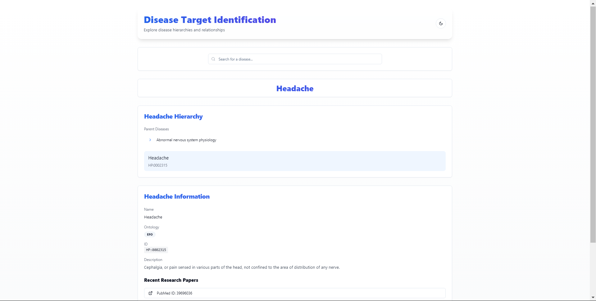

Notes
Demo Preview

Tech Stack Learned
- React
- Next.js
- Tailwind CSS
Terminologies Learned
- Target: A biological entity (e.g., gene, protein) associated with a disease and typically the focus of therapeutic development.
- EFO (Experimental Factor Ontology): A curated ontology standardizing terms for experimental variables, including diseases, ensuring consistent terminology in research.
- MONDO (Monarch Disease Ontology): A unified and comprehensive resource that integrates multiple disease ontologies for accurate classification.
- EBI OLS (Ontology Lookup Service): A tool that provides access to ontology data, enabling efficient retrieval of disease hierarchies and classifications.
- Hierarchy: The organization of diseases in structured levels ranging from general to specific terms.
Summary of the Widget
The widget facilitates the identification and exploration of diseases within their hierarchical contexts, addressing key challenges in disease specification:
- Search for diseases by name or keyword.
- Explore hierarchical relationships between diseases.
- Select a disease and retrieve its corresponding EFO or MONDO code.
- Optional features include disease descriptions and links to research papers.
Additional Key Points
- Challenges Addressed: Ambiguity in disease names, hierarchical organization, and multiple categorization contexts.
- Implementation:
- Fetch ontology data from EBI OLS API.
- Use React or Vue.js for an interactive UI.
- Visualize hierarchies with tree-view libraries.
- Include external sources like PubMed for additional information.
- Evaluation Criteria: Completeness, usability, resourcefulness, and documentation quality.
- Bonus Features:
- Displaying disease descriptions.
- Providing links to recent research papers with titles and authors.
Conclusion
The widget enhances the process of disease identification and exploration for biologists, supporting accurate target identification and therapeutic development. It demonstrates the application of modern tech stacks like React, Next.js, and Tailwind CSS for solving complex problems in the biomedical domain.